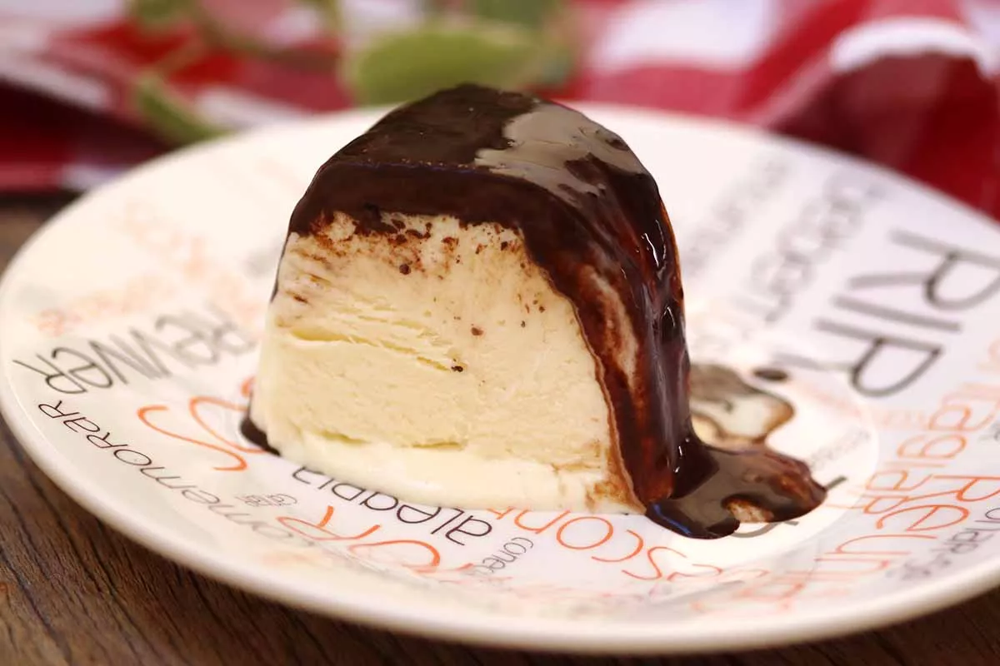

Sorvete

ingredientes(10 porções)
- 1 litro de leite
- 1 lata de leite condensado
-
1 caixa de creme de leite
- 2 pacotes de gelatina de sua preferência
Modo de preparo
-
Aqueça o leite e dissolva as gelatinas, depois acrescente o leite condensado misture e ponha para gelar no freezer por 2 horas
- Depois retire do freezer, coloque na batedeira e acrescente o creme de leite, bata por 15 minutos na velocidade máxima.
- Por último coloque em uma vasilha e coloque para gelar no freezer.
- Sirva quando estiver bem duro.
Link para melhor entendimento da receita: